Самое крупное сформировавшееся после Катастрофы издательство, создающее плакаты, афиши, постеры и так далее. Мало кто о них не знает в Пустошах.
0 от Комьюнити
Самые впечатляющие экземпляры от энтузиастов, которые удалось сохранить и распространить.
Инструкция по созданию обложек
Шаг 1 - Настройки и программы
Графику игры на максимум, цветокор на свой вкус. Приправьте это установленным и настроенным Решейдом, а также имеющимся Photoshop c Nvidia Ancel.
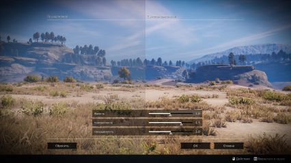
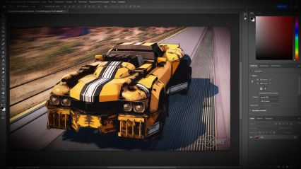
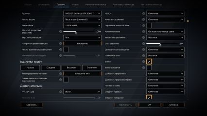
Шаг 2 - Собственная сцена
Сейчас в игре доступно только три метода: прицел, свободная камера, Ancel. Первый для закрепления на селфи-палке, второй для фильтров и третий для остановки времени и FOV
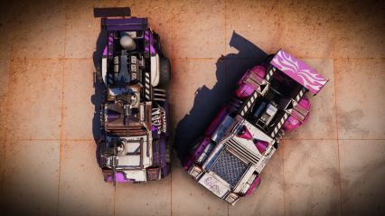
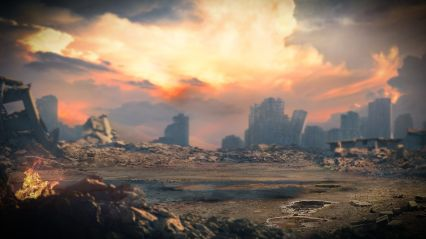
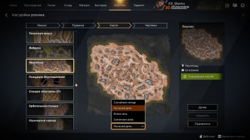
Шаг 3 - Методы фотографирования
Используйте фотошоп, умело применяя его инструментарий. Помощником в этом для вас чаще всего будет Camera Raw, и гайды с ютуба. Добейтесь желаемого результата.
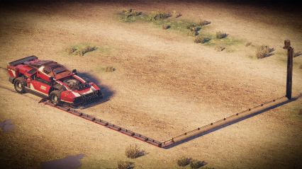
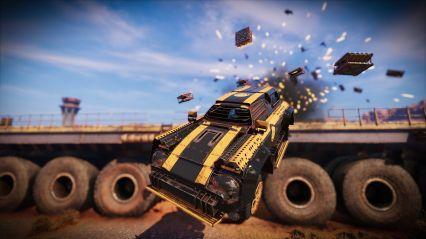
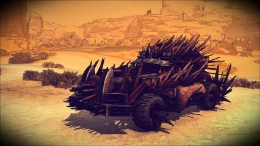
Шаг 4 - Последующая обработка
Чтобы обозначить вас как автора обложки существует вотемарк. Которой у каждого свой, ставится на каждую работу так, чтобы не бросался в глаза, но был виден.
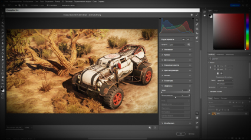
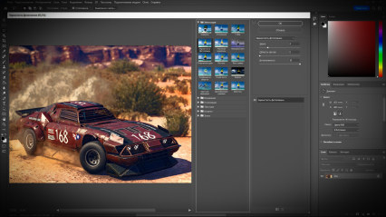
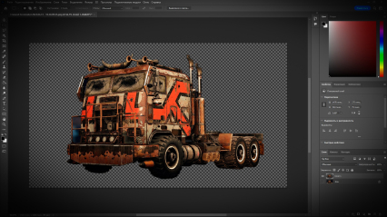
Шаг 5 - Авторство
Временное правительство из бывших вояк время зря не теряет. Усмиряет Каганат, борется с Опустошителями, налаживает коммуникации и отношения... А где минусы?
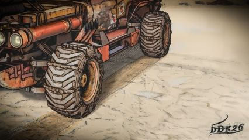
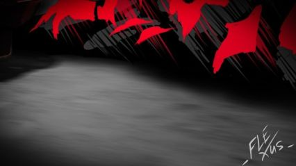
Шаг 6 - Распространение
Обложка готова, опубликуйте её в своих соц. сетях или сообществе, если имеется. А когда у вас накопится достаточно работ - возможно они попадут в Фотогазету.
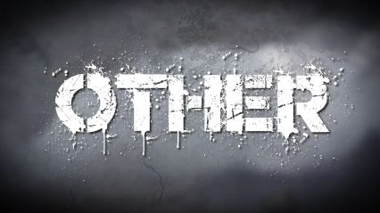
Альтернативное ремесло
Обложками могут быть не только скриншоты с фильтрами и обработкой, но и сценой c 3D моделями, цифровым рисунком, смесью игры с реальностью и так далее. Всё в ваших руках!
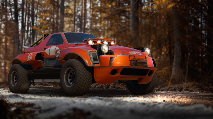
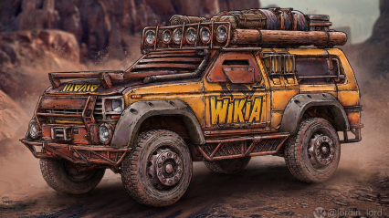
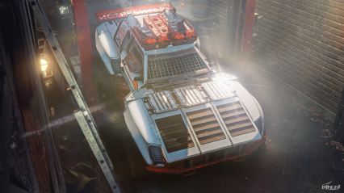
Сообщите нам, если у вас есть работы, которые хотели бы видеть в Фотогазете!Последнее обновление: 00.00.0000